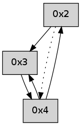

>> << IDX [start] -100 -25 -5 +0 +5 +25 +100 [255.076838017]
 Previous packets
----------------------------------------------------------------------
250.059608 beacon01(adaf) #0 coord=01,02,05,03,04 cycle=368.0ms assoc
-- color-indic=0 64 f4 8c
250.069564 beacon02(adaf) #0 coord=01,02,05,03,04 cycle=368.0ms assoc 64 ce 2d
250.079566 beacon05(adaf) #0 coord=01,02,05,03,04 cycle=368.0ms assoc 64 85 61
250.089565 beacon03(adaf) #0 coord=01,02,05,03,04 cycle=368.0ms assoc 64 06 87
250.099568 beacon04(adaf) #0 coord=01,02,05,03,04 cycle=368.0ms assoc 64 4d cb
250.111228 [Hello(4): seq=38 sym=3,2 sysInfo= stat=3:1,0,0,0/2:0,0,0,0]
----------------------------------------------------------------------
250.477713 beacon01(adaf) #0 coord=01,02,05,03,04 cycle=368.0ms assoc
-- color-indic=0 64 9c 27
250.487670 beacon02(adaf) #0 coord=01,02,05,03,04 cycle=368.0ms assoc 64 a6 86
250.497670 beacon05(adaf) #0 coord=01,02,05,03,04 cycle=368.0ms assoc 64 ed ca
250.507671 beacon03(adaf) #0 coord=01,02,05,03,04 cycle=368.0ms assoc 64 6e 2c
250.517670 beacon04(adaf) #0 coord=01,02,05,03,04 cycle=368.0ms assoc 64 25 60
250.529298 [Hello(2): seq=537 sym=4 sysInfo= stat=4:9,0,0,0]
----------------------------------------------------------------------
250.895815 beacon01(adaf) #0 coord=01,02,05,03,04 cycle=368.0ms assoc
-- color-indic=0 64 4b b9
250.905772 beacon02(adaf) #0 coord=01,02,05,03,04 cycle=368.0ms assoc 64 71 18
250.915772 beacon05(adaf) #0 coord=01,02,05,03,04 cycle=368.0ms assoc 64 3a 54
250.925772 beacon03(adaf) #0 coord=01,02,05,03,04 cycle=368.0ms assoc 64 b9 b2
250.935772 beacon04(adaf) #0 coord=01,02,05,03,04 cycle=368.0ms assoc 64 f2 fe
250.947425 [Hello(4): seq=39 sym=3,2 sysInfo= stat=3:1,0,0,0/2:1,0,0,0]
----------------------------------------------------------------------
251.313917 beacon01(adaf) #0 coord=01,02,05,03,04 cycle=368.0ms assoc
-- color-indic=0 64 5d 79
251.323873 beacon02(adaf) #0 coord=01,02,05,03,04 cycle=368.0ms assoc 64 67 d8
251.333873 beacon05(adaf) #0 coord=01,02,05,03,04 cycle=368.0ms assoc 64 2c 94
251.343874 beacon03(adaf) #0 coord=01,02,05,03,04 cycle=368.0ms assoc 64 af 72
251.353874 beacon04(adaf) #0 coord=01,02,05,03,04 cycle=368.0ms assoc 64 e4 3e
251.365535 [Hello(2): seq=538 sym=3,4 sysInfo= stat=3:0,0,0,0/4:9,0,0,0]
----------------------------------------------------------------------
251.732018 beacon01(adaf) #0 coord=01,02,05,03,04 cycle=368.0ms assoc
-- color-indic=0 64 8a e7
251.741974 beacon02(adaf) #0 coord=01,02,05,03,04 cycle=368.0ms assoc 64 b0 46
251.751975 beacon05(adaf) #0 coord=01,02,05,03,04 cycle=368.0ms assoc 64 fb 0a
251.761976 beacon03(adaf) #0 coord=01,02,05,03,04 cycle=368.0ms assoc 64 78 ec
251.771975 beacon04(adaf) #0 coord=01,02,05,03,04 cycle=368.0ms assoc 64 33 a0
251.783635 [Hello(4): seq=40 sym=3,2 sysInfo= stat=3:1,0,0,0/2:2,0,0,0]
----------------------------------------------------------------------
252.150122 beacon01(adaf) #0 coord=01,02,05,03,04 cycle=368.0ms assoc
-- color-indic=0 64 e2 4c
252.160078 beacon02(adaf) #0 coord=01,02,05,03,04 cycle=368.0ms assoc 64 d8 ed
252.170079 beacon05(adaf) #0 coord=01,02,05,03,04 cycle=368.0ms assoc 64 93 a1
252.180079 beacon03(adaf) #0 coord=01,02,05,03,04 cycle=368.0ms assoc 64 10 47
252.190080 beacon04(adaf) #0 coord=01,02,05,03,04 cycle=368.0ms assoc 64 5b 0b
252.201729 [Hello(2): seq=539 sym=3,4 sysInfo= stat=3:0,0,0,0/4:9,0,0,0]
----------------------------------------------------------------------
252.568224 beacon01(adaf) #0 coord=01,02,05,03,04 cycle=368.0ms assoc
-- color-indic=0 64 35 d2
252.578181 beacon02(adaf) #0 coord=01,02,05,03,04 cycle=368.0ms assoc 64 0f 73
252.588182 beacon05(adaf) #0 coord=01,02,05,03,04 cycle=368.0ms assoc 64 44 3f
252.598181 beacon03(adaf) #0 coord=01,02,05,03,04 cycle=368.0ms assoc 64 c7 d9
252.608182 beacon04(adaf) #0 coord=01,02,05,03,04 cycle=368.0ms assoc 64 8c 95
252.619803 [Hello(4): seq=41 sym=3,2 sysInfo= stat=3:1,0,0,0/2:3,0,0,0]
----------------------------------------------------------------------
252.986328 beacon01(adaf) #0 coord=01,02,05,03,04 cycle=368.0ms assoc
-- color-indic=0 64 36 61
252.996284 beacon02(adaf) #0 coord=01,02,05,03,04 cycle=368.0ms assoc 64 0c c0
253.006287 beacon05(adaf) #0 coord=01,02,05,03,04 cycle=368.0ms assoc 64 47 8c
253.016284 beacon03(adaf) #0 coord=01,02,05,03,04 cycle=368.0ms assoc 64 c4 6a
253.026286 beacon04(adaf) #0 coord=01,02,05,03,04 cycle=368.0ms assoc 64 8f 26
253.037921 [Hello(2): seq=540 sym=3,4 sysInfo= stat=3:0,0,0,0/4:9,0,0,0]
----------------------------------------------------------------------
253.404429 beacon01(adaf) #0 coord=01,02,05,03,04 cycle=368.0ms assoc
-- color-indic=0 64 e1 ff
253.414386 beacon02(adaf) #0 coord=01,02,05,03,04 cycle=368.0ms assoc 64 db 5e
253.424386 beacon05(adaf) #0 coord=01,02,05,03,04 cycle=368.0ms assoc 64 90 12
253.434387 beacon03(adaf) #0 coord=01,02,05,03,04 cycle=368.0ms assoc 64 13 f4
253.444386 beacon04(adaf) #0 coord=01,02,05,03,04 cycle=368.0ms assoc 64 58 b8
253.456025 [Hello(4): seq=42 sym=3,2 sysInfo= stat=3:1,0,0,0/2:4,0,0,0]
----------------------------------------------------------------------
253.822531 beacon01(adaf) #0 coord=01,02,05,03,04 cycle=368.0ms assoc
-- color-indic=0 64 89 54
253.832487 beacon02(adaf) #0 coord=01,02,05,03,04 cycle=368.0ms assoc 64 b3 f5
253.842489 beacon05(adaf) #0 coord=01,02,05,03,04 cycle=368.0ms assoc 64 f8 b9
253.852488 beacon03(adaf) #0 coord=01,02,05,03,04 cycle=368.0ms assoc 64 7b 5f
253.862489 beacon04(adaf) #0 coord=01,02,05,03,04 cycle=368.0ms assoc 64 30 13
253.874187 [Hello(2): seq=541 sym=3 asym=4 sysInfo= stat=3:1,0,0,0/4:9,0,0,0]
----------------------------------------------------------------------
254.240634 beacon01(adaf) #0 coord=01,02,05,03,04 cycle=368.0ms assoc
-- color-indic=0 64 5e ca
254.250591 beacon02(adaf) #0 coord=01,02,05,03,04 cycle=368.0ms assoc 64 64 6b
254.260590 beacon05(adaf) #0 coord=01,02,05,03,04 cycle=368.0ms assoc 64 2f 27
254.270591 beacon03(adaf) #0 coord=01,02,05,03,04 cycle=368.0ms assoc 64 ac c1
254.280591 beacon04(adaf) #0 coord=01,02,05,03,04 cycle=368.0ms assoc 64 e7 8d
254.292230 [Hello(4): seq=43 sym=3,2 sysInfo= stat=3:1,0,0,0/2:5,0,0,0]
----------------------------------------------------------------------
254.658736 beacon01(adaf) #0 coord=01,02,05,03,04 cycle=368.0ms assoc
-- color-indic=0 64 48 0a
254.668692 beacon02(adaf) #0 coord=01,02,05,03,04 cycle=368.0ms assoc 64 72 ab
254.678693 beacon05(adaf) #0 coord=01,02,05,03,04 cycle=368.0ms assoc 64 39 e7
254.688692 beacon03(adaf) #0 coord=01,02,05,03,04 cycle=368.0ms assoc 64 ba 01
254.698694 beacon04(adaf) #0 coord=01,02,05,03,04 cycle=368.0ms assoc 64 f1 4d
254.710362 [Hello(2): seq=542 sym=3 asym=4 sysInfo= stat=3:2,0,0,0/4:9,0,0,0]